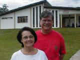
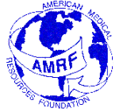
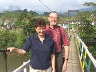

Clínica Misional "Nuestra Señora de Guadalupe"
Vicariato Apostólico de Zamora, Ecuador
About Us
Clinic Newletters
Other Interesting Links:
Our gratitude goes to our main Sponsors and Supporters
Hermana Consuelo Carvajal Correa
Misionera de Santa Teresita del Niño Jesús, Colombia
Superiora Local de Guadalupe
Dr. Jaime Ortiz
Zumbi, Zamora-Chinchipe, Ecuador
Doctor de Medicinal General for several years
Prälat Albert Holenstein
Direktor der Päpstlichen Missionswerke der Diözese Feldkirch, Austria
Mayor Financial Support for the Construction
Mons. Serafín Cartagena
Obispo del Vicariato Apostólico de Zamora, Ecuador

Mons. P. Ricardo Flatz
Provicario del Vicariato Apostólico de Zamora, Ecuador
Arquitecto Carlos Espejo de Loja, Ecuador
Ing. Eugenio Reyes
Alcalde del Ilustre Municipio de Zamora, Ecuador
Mons. Fausto Gabriel Trávez Trávez
Obispo del Vicariato Apostólico de Zamora, Ecuador

Mr.&Mrs. Frank & Marie Glowski, USA
Secretary & Treasurer of the Foundation
"The Friends of the Mission Clinic of Our Lady of Guadalupe, Inc."

American Medical Resources Foundation
P.O. Box 3609
Brockton, MA 02304-3609
Tel. 508 580 3301
www.amrf.com
Catholic Medical Mission Board, New York,
supports our volunteers

Dr. med. dent. Eberhard Pierro & Frau Gudrun Pierro, Deutschland
Vorsitzender des Förderkreies Santa Maria
Serle M. Epstein, M.D. F.A.C.P., USA
President and Chief Medical Advisor of the Foundation
"The Friends of the Mission Clinic of Our Lady of Guadalupe, Inc."
Amy (Amanda) Anderson, USA
Nurse and Coordinator of the Mission Clinic
The list would be very long if we were to name all the other supporters, helpers, workers and volunteers in the planning, construction and daily operations of the Mission Clinic "Nuestra Señora de Guadalupe".
We also thank all the generous donors.
To all of them our profound gratitude.
Sincerely,
P. Jorge Nigsch